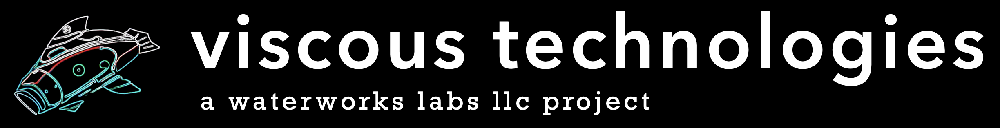

Creative design and R&D lab developing innovative technologies and designs through art and engineering
About Us
Waterworks Labs LLC was founded to create innovative designs, solve unique problems, and develop new technologies. We conduct contract work and provide design, engineering, and consulting services. We reinvest profits into independent research and development projects to grow new ideas and technologies, which is central to our mission.
Our Services
- Design and Consulting
- Experimental Prototyping
- Complex System Development & Production
- Marine Robotics, Naval Architecture & Ocean Engineering
- Autonomous Underwater Vehicles
- Oceanographic Instrumentation
- Fluid Flow and Structural Analysis
- Subsea Pressure Vessels
- Laboratory & At-Sea Testing
Projects

Flow control technology for maritime systems enabled by predictive computational fluid dynamics (CFD) methods developed in OpenFOAM and advanced design and manufacturing.
Contact Us
chris@waterworkslabs.com